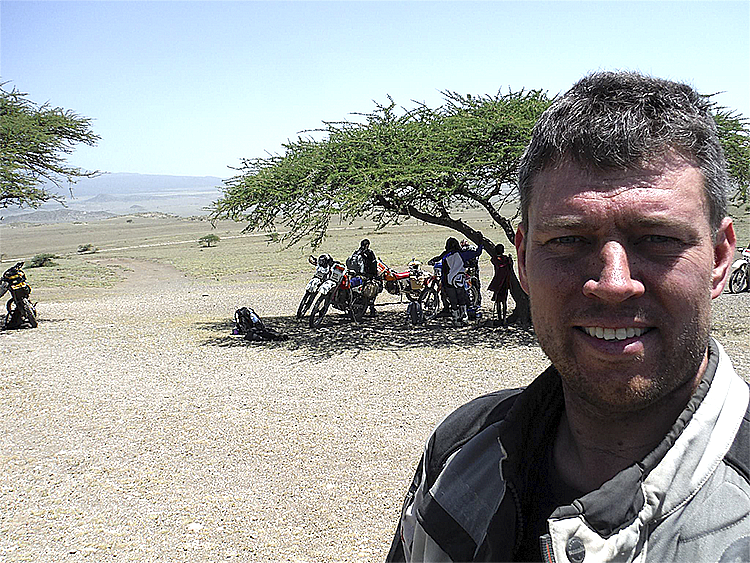
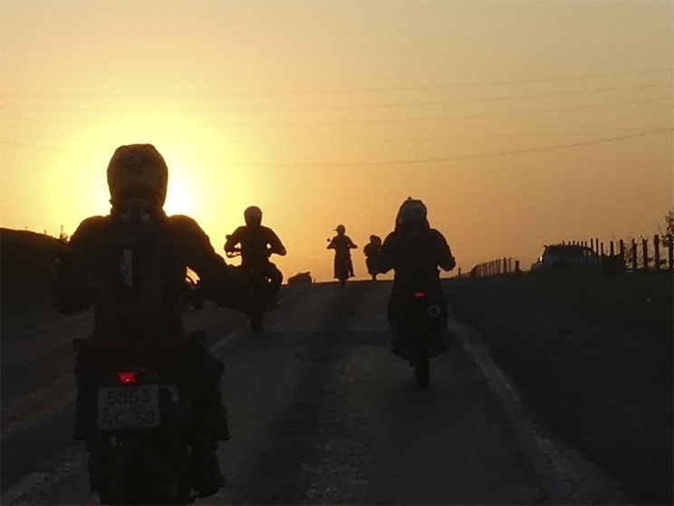

Design med holdning - Fra ide til tilfreds kunde
Har du, ligesom mig, stået og kigget ind i bagspejlet og fortrudt de beslutninger du tog. Det har du sikkert og det har jeg også. Det er sjover og opleve at det var den rigtige måde man greb det and på og det blev en succes. Et af de bedste råd jeg ved om er: lære fra andre og tilpas det til din situation, og der kommer jeg ind i dit billede. Mit navn er Stefan Jacobsen, gift med Gitte og vi har 2 børn. Arbejdsmarkedet har jeg være på i 25 år hvor 10 af dem som selvstændig. Lige nu studerer jeg til Multimedie Designer og vil snart skulle finde en praktikplads. Jeg er ivrig efter at lære hvorledes man laver værdibasseret markedsføringsmateriale tilpasset den virksom du er I.
Om mig
Er uddannet tømrer og efterfølgende læst tværkulturelle studie. Mine arbejdsopgaver har skiftet karakter i de 25 år jeg har været på arbejdsmarkedet. Det har være lige fra tømrer til kulturkonsulent i Sierra Leone til pedel/pædagog til tværkulturel medarbejder til selvstændig erhvervsdrivende som tømrermester og rejsebureau indehaver. Som selvstændig skal man kunne mange kunne mange forskellige ting og min interesse for markedsføring er bare vokset i den tid jeg har været selvstændig. Derfor læser jeg nu til multimediedesigner.
Proses portifolie
Lige nu studere jeg på livet løs som multimedie designer. Der er en bred uddannelse og den er derfor meget brugbart for det firma som har en størrelse hvor det ikke kan betale sig at gå i byen for at få lavet sit markedsføringsmateriale til samtlige platforme. I den forbindelse søger jeg praktikplads i et firma som har noget lignende nedenstående profil. Det er under disse omstændigheder vi begge får bedst gavn af hinanden😊
- har en flad firmastuktur
- der vises tillid fremfor kontrol
- en virksomhed med klare værdier
- der bruge opmuntring frem for kritik
Kontakt
Stefan jacobsen
tlf: 61603368
email: stefanjacobsen@live.dk
